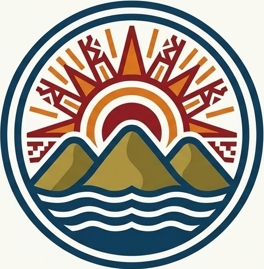

Tierra de agua, cultura y resiliencia
Conoce el origen mazateco y la transformación tras la presa.
Descubre paisajes, islas y la gran presa.
Tradiciones, gastronomía y festividades.
Pesca, agricultura y desarrollo regional.